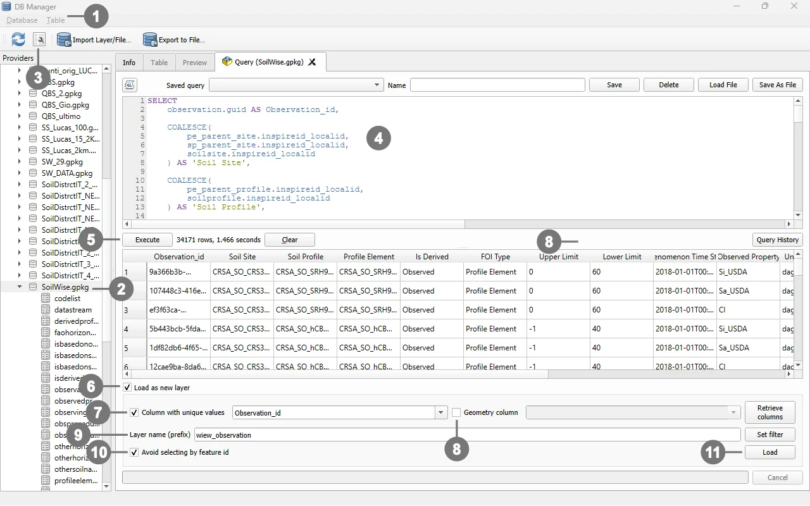

view_observation presents observations in a wide format, where each observation occupies a single row and the related information is exposed through thematic columns. This format simplifies data browsing in QGIS, data export, and report generation, without requiring users to manually reconstruct the relationships between the normalized source tables.
The query starts from the observation table and enriches each record with:
Derived or Observed classification of the relevant profile;Important
In the QGIS project, view_observation is not a persistent database view stored in the GeoPackage or database schema. It is a query-based layer whose SELECT statement is stored in the QGIS project configuration.
Consequently:
VIEW object is automatically created in the database;The term view is therefore used in a functional sense, because the layer provides a derived representation of the data. From a technical perspective, however, it is a SQL query layer within the QGIS project.
The query does not materialize or copy its results into the project. Whenever QGIS loads the view_observation layer, the data provider executes the SELECT statement again against the source tables.
When the project is opened, the layer is reloaded, or its data source is refreshed, the displayed content is recalculated from the data currently stored in the GeoPackage or database.
This behaviour means that:
Note
If the layer is already open, changes made through another application or database connection may require the QGIS Reload or Refresh command. Reopening the project also forces the layer to be loaded again.
Each row returned by the query corresponds to one record in the observation table.
| Column | Source or calculation | Description |
|---|---|---|
Observation_id |
observation.guid |
Unique observation identifier used by QGIS as the unique-value column for the query layer. |
Soil Site |
COALESCE among the site resolved from the Profile Element, the site resolved from the Soil Profile, and the directly linked site |
Local identifier of the Soil Site associated with the observation. |
Soil Profile |
COALESCE between the parent profile of the Profile Element and the directly linked profile |
Local identifier of the Soil Profile associated with the observation. |
Profile Element |
profileelement.inspireid_localid |
Local identifier of the Profile Element directly associated with the datastream. |
Is Derived |
CASE expression based on the relevant profile’s isderived value |
Returns Derived, Observed, or NULL. |
FOI Type |
CASE expression based on the datastream FOI foreign keys |
Feature of Interest type: Profile Element, Soil Profile, Soil Site, Soil Derived Object, or None. |
Upper Limit |
profileelementdepthrange_uppervalue |
Upper limit of the Profile Element depth interval. |
Lower Limit |
profileelementdepthrange_lowervalue |
Lower limit of the Profile Element depth interval. |
Phenomenon Time Start |
observation.phenomenontime_start |
Start date and time of the observed phenomenon. |
Observed Property |
observedproperty.name |
Name of the property being observed. |
Unit Of Measure |
unitofmeasure.symbol |
Unit-of-measure symbol, when available. |
Observing Procedure |
observingprocedure.name |
Name of the procedure used to produce the observation. |
Category Value |
observation.result_text |
Textual or categorical observation result. |
Boolean Value |
observation.result_boolean |
Boolean observation result. |
Quantity Value |
observation.result_real when datastream.type = 'Quantity' |
Numeric value for observations belonging to Quantity datastreams. |
Count Value |
observation.result_real when datastream.type = 'Count' |
Numeric value for observations belonging to Count datastreams. |
Fields that are not applicable to the observation type or Feature of Interest are returned as NULL.
A datastream may refer directly to one of the following entities:
soilsite;soilprofile;profileelement;soilderivedobject.The FOI Type column identifies the linked entity type by checking which guid_* foreign key is populated in the datastream.
When the Feature of Interest is a Profile Element, the query traverses the hierarchy as follows:
Profile Element
-> Soil Profile
-> Soil Plot
-> Soil Site
When the Feature of Interest is a Soil Profile, the hierarchy is traversed as follows:
Soil Profile
-> Soil Plot
-> Soil Site
The COALESCE function returns the first available non-null identifier. This allows the Soil Site and Soil Profile columns to be populated both for direct relationships and for relationships resolved through the hierarchy.
The Is Derived column is calculated only when the datastream is associated with a Profile Element or a Soil Profile:
Profile Element, the isderived value is read from its parent Soil Profile;Soil Profile, the isderived value is read from the directly associated profile;1 is mapped to Derived;0 is mapped to Observed;NULL.The value stored in observation.result_real is exposed through two separate output columns:
Quantity Value, only for datastreams of type Quantity;Count Value, only for datastreams of type Count.This separation improves readability and export usability while preserving the normalized structure of the source tables.
The following statement is the SELECT query associated with the view_observation layer. It does not include CREATE VIEW, because QGIS loads its result as a query-based layer.
SELECT
------------------------------------------------------------------
-- Unique observation identifier used by QGIS
------------------------------------------------------------------
observation.guid AS "Observation_id",
------------------------------------------------------------------
-- Parent entities, resolved through soilplot where required
------------------------------------------------------------------
COALESCE(
pe_parent_site.inspireid_localid,
sp_parent_site.inspireid_localid,
soilsite.inspireid_localid
) AS "Soil Site",
COALESCE(
pe_parent_profile.inspireid_localid,
soilprofile.inspireid_localid
) AS "Soil Profile",
profileelement.inspireid_localid AS "Profile Element",
------------------------------------------------------------------
-- Derived/Observed classification
------------------------------------------------------------------
CASE
WHEN datastream.guid_profileelement IS NOT NULL THEN
CASE pe_parent_profile.isderived
WHEN 1 THEN 'Derived'
WHEN 0 THEN 'Observed'
ELSE NULL
END
WHEN datastream.guid_soilprofile IS NOT NULL THEN
CASE soilprofile.isderived
WHEN 1 THEN 'Derived'
WHEN 0 THEN 'Observed'
ELSE NULL
END
ELSE NULL
END AS "Is Derived",
------------------------------------------------------------------
-- Feature of Interest type
------------------------------------------------------------------
CASE
WHEN datastream.guid_profileelement IS NOT NULL
THEN 'Profile Element'
WHEN datastream.guid_soilprofile IS NOT NULL
THEN 'Soil Profile'
WHEN datastream.guid_soilsite IS NOT NULL
THEN 'Soil Site'
WHEN datastream.guid_soilderivedobject IS NOT NULL
THEN 'Soil Derived Object'
ELSE 'None'
END AS "FOI Type",
------------------------------------------------------------------
-- Depth fields, applicable to Profile Elements only
------------------------------------------------------------------
profileelement.profileelementdepthrange_uppervalue AS "Upper Limit",
profileelement.profileelementdepthrange_lowervalue AS "Lower Limit",
------------------------------------------------------------------
-- Observation information
------------------------------------------------------------------
observation.phenomenontime_start AS "Phenomenon Time Start",
------------------------------------------------------------------
-- Observed property
------------------------------------------------------------------
observedproperty.name AS "Observed Property",
------------------------------------------------------------------
-- Unit of measure
------------------------------------------------------------------
unitofmeasure.symbol AS "Unit Of Measure",
------------------------------------------------------------------
-- Observing procedure
------------------------------------------------------------------
observingprocedure.name AS "Observing Procedure",
------------------------------------------------------------------
-- Categorical and Boolean results
------------------------------------------------------------------
observation.result_text AS "Category Value",
observation.result_boolean AS "Boolean Value",
------------------------------------------------------------------
-- Numeric value for Quantity observations
------------------------------------------------------------------
CASE
WHEN datastream.type = 'Quantity'
THEN observation.result_real
ELSE NULL
END AS "Quantity Value",
------------------------------------------------------------------
-- Numeric value for Count observations
------------------------------------------------------------------
CASE
WHEN datastream.type = 'Count'
THEN observation.result_real
ELSE NULL
END AS "Count Value"
FROM observation
------------------------------------------------------------------
-- Datastream associated with the observation
------------------------------------------------------------------
JOIN datastream
ON observation.guid_datastream = datastream.guid
------------------------------------------------------------------
-- Observed property
------------------------------------------------------------------
JOIN observedproperty
ON datastream.guid_observedproperty = observedproperty.guid
------------------------------------------------------------------
-- Unit of measure
-- Normally available only for Quantity datastreams
------------------------------------------------------------------
LEFT JOIN unitofmeasure
ON datastream.code_unitofmeasure = unitofmeasure.code
------------------------------------------------------------------
-- Observing procedure
------------------------------------------------------------------
LEFT JOIN observingprocedure
ON datastream.guid_observingprocedure = observingprocedure.guid
------------------------------------------------------------------
-- Direct Features of Interest
------------------------------------------------------------------
LEFT JOIN soilsite
ON datastream.guid_soilsite = soilsite.guid
LEFT JOIN soilprofile
ON datastream.guid_soilprofile = soilprofile.guid
LEFT JOIN profileelement
ON datastream.guid_profileelement = profileelement.guid
LEFT JOIN soilderivedobject
ON datastream.guid_soilderivedobject = soilderivedobject.guid
------------------------------------------------------------------
-- Profile Element parent: Soil Profile
------------------------------------------------------------------
LEFT JOIN soilprofile AS pe_parent_profile
ON profileelement.ispartof = pe_parent_profile.guid
------------------------------------------------------------------
-- Soil Profile parent: Soil Plot
------------------------------------------------------------------
LEFT JOIN soilplot AS pe_parent_plot
ON pe_parent_profile.location = pe_parent_plot.guid
LEFT JOIN soilplot AS sp_parent_plot
ON soilprofile.location = sp_parent_plot.guid
------------------------------------------------------------------
-- Soil Plot parent: Soil Site
------------------------------------------------------------------
LEFT JOIN soilsite AS pe_parent_site
ON pe_parent_plot.locatedon = pe_parent_site.guid
LEFT JOIN soilsite AS sp_parent_site
ON sp_parent_plot.locatedon = sp_parent_site.guid
Note
Column aliases containing spaces are enclosed in double quotation marks. This ensures that they are interpreted correctly as SQL identifiers and improves SQL standards compliance.
The following procedure adds the query to a QGIS project without creating a persistent view in the database.
Open the QGIS project. If necessary, verify that the GeoPackage or database connection is available in the Browser panel.

① Open Database > DB Manager.Note
Command names may vary slightly depending on the QGIS version and the user-interface language.
The same SQL logic can also be used directly in a database management system. In this case, the SELECT statement must be preceded by CREATE VIEW:
CREATE VIEW view_observation AS
SELECT
-- Use the same column list and JOIN clauses as the QGIS query
...
;
To drop and recreate the view:
DROP VIEW IF EXISTS view_observation;
CREATE VIEW view_observation AS
SELECT
-- Use the same column list and JOIN clauses as the QGIS query
...
;
When implemented as a persistent database view:
| Aspect | SQL layer in the QGIS project | Persistent view in the DBMS |
|---|---|---|
| Definition location | QGIS project file | Database |
| Data-schema modification | No | Yes, a VIEW object is created |
| Result refresh | Whenever the layer is loaded or refreshed | Whenever the view is queried |
| Availability | Within the QGIS project containing the query | To all authorized database clients |
| Portability | Requires the project or manual layer recreation | Requires access to the database |
| View-creation privileges | Not required | Generally required |